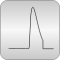

TruncatedWeibullLibrary of truncated Weibull distribution functions |

|
Package Contents
|
Density of truncated Weibull distribution |
|
|
Cumulative distribution function of truncated Weibull distribution |
|
|
Quantile of truncated Weibull distribution |
Information
This information is part of the Modelica Standard Library maintained by the Modelica Association.
This package provides
- probability density function (= derivative of cumulative distribution function),
- cumulative distribution function, and
- quantile (= inverse cumulative distribution function).
of the truncated Weibull distribution. Examples:


For more details
of the Weibull distribution, see
Wikipedia,
of truncated distributions, see
Wikipedia.